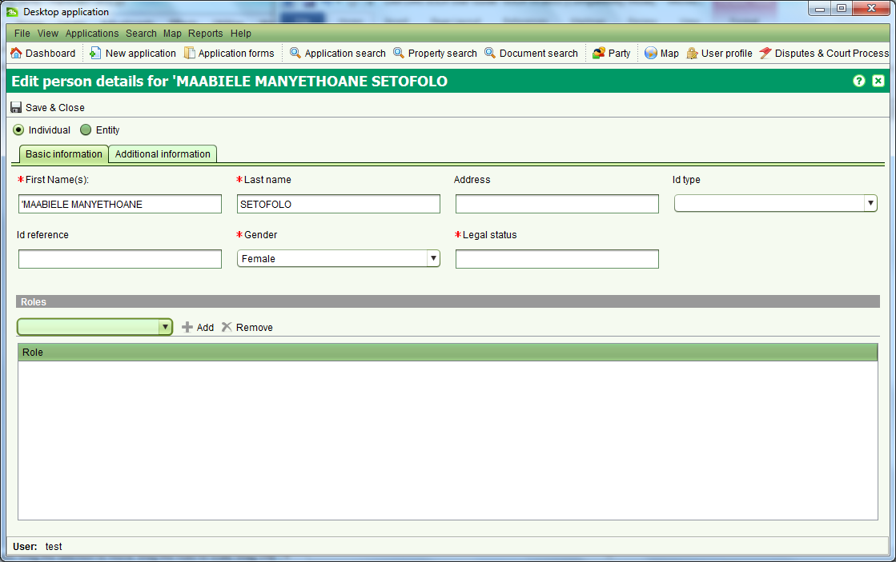

Party Details
The Party Details screen allows you to create new parties as well as edit
party details. This screen can be accessed by multiple functions in SOLA
including the Party Search screen.

You can enter details for an entity (i.e. organization, group or company) or
an individual. The basic information required includes the name of the party,
gender and legal status with additional information such as contact information
and alias details entered as required on the Additional Information tab. Once the
necessary party details have been entered click
 Save & Close to create or update the party.
Save & Close to create or update the party.
Also See